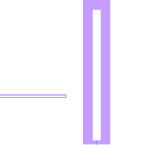

Tutorial: Composite Components
In Building a Component, you created a component with geometry defined directly in _geometry!. In Schematic Basics, you connected components in a schematic graph. A CompositeComponent combines both ideas: its geometry is defined by an internal schematic of subcomponents. In this tutorial, you'll build a simple transmon qubit as a composite of a capacitor island and a Josephson junction.
What You'll Learn
- Defining a
CompositeComponentwith@compdef - The three required methods:
_build_subcomponents,_graph!,map_hooks - Forwarding parameters to subcomponents
- Inspecting composite geometry and hooks
- Using a composite component in a schematic
Prerequisites
- Completed Building a Component tutorial
- Completed Schematic Basics tutorial
Setup
using DeviceLayout, DeviceLayout.PreferredUnits
using DeviceLayout.SchematicDrivenLayout
using DeviceLayout.SchematicDrivenLayout.ExamplePDK
using DeviceLayout.SchematicDrivenLayout.ExamplePDK.LayerVocabulary
using FileIOWe import ExamplePDK and its LayerVocabulary because we'll use existing ExamplePDK components as subcomponents, and the layer constants (like METAL_NEGATIVE) are defined in LayerVocabulary.
Step 1: Inspect the Subcomponents
Before building our composite, let's look at the two components we'll compose. ExampleRectangleIsland is a rectangular capacitor island with a surrounding gap. ExampleSimpleJunction is a placeholder Josephson junction.
import DeviceLayout.SchematicDrivenLayout.ExamplePDK.SimpleJunctions:
ExampleSimpleJunction
import DeviceLayout.SchematicDrivenLayout.ExamplePDK.Transmons:
ExampleRectangleIsland
island = ExampleRectangleIsland()
println("Island hooks: ", keys(hooks(island)))Island hooks: (:junction, :readout, :xy, :z)junction = ExampleSimpleJunction()
println("Junction hooks: ", keys(hooks(junction)))Junction hooks: (:island, :ground)The island has hooks including :junction (where the junction attaches), :readout, :xy, and :z. The junction has two hooks: :island (meets the island metal) and :ground (meets the ground plane). Our composite will fuse the island's :junction hook to the junction's :island hook.
Step 2: Define the Composite
A CompositeComponent uses @compdef just like a regular Component, but inherits from CompositeComponent instead of Component. Where a Component implements _geometry! and hooks, a CompositeComponent implements three different methods: _build_subcomponents, _graph!, and map_hooks.
@compdef struct SimpleTransmon <: CompositeComponent
name = "transmon"
cap_width = 24μm
cap_length = 520μm
cap_gap = 30μm
junction_gap = 12μm
junction_pos = :bottom
island_rounding = 0μm
w_jj = 1μm
h_jj = 1μm
endThe parameters include both island parameters (cap_width, cap_length, cap_gap, junction_pos, island_rounding) and junction parameters (w_jj, h_jj). The composite owns all parameters and forwards the relevant subset to each subcomponent. The junction_gap parameter is shared — it controls both the island's gap on the junction side and the junction's total height.
Step 3: Build the Subcomponents
The first required method is _build_subcomponents. It returns a Tuple of subcomponent instances. Each subcomponent's name field determines its key in the NamedTuple that _graph! receives.
function SchematicDrivenLayout._build_subcomponents(tr::SimpleTransmon)
# Create the island, forwarding matching parameters
@component island = ExampleRectangleIsland(
cap_width = tr.cap_width,
cap_length = tr.cap_length,
cap_gap = tr.cap_gap,
junction_gap = tr.junction_gap,
junction_pos = tr.junction_pos,
island_rounding = tr.island_rounding,
)
# Create the junction, forwarding its parameters
@component junction = ExampleSimpleJunction(
w_jj = tr.w_jj,
h_jj = tr.h_jj,
h_ground_island = tr.junction_gap,
)
return (island, junction)
endWe use the @component macro to create each subcomponent — this automatically sets the component's name from the variable name. Notice how junction_gap on the composite maps to junction_gap on the island and h_ground_island on the junction — the composite provides a unified interface even when subcomponents use different parameter names for related or derived quantities.
DeviceLayout provides filter_parameters to automatically find parameters that share names between the composite and a subcomponent. This is convenient when many parameters pass through unchanged, but for this tutorial, explicit forwarding is clearer. See ExampleRectangleTransmon in the ExamplePDK source for this pattern.
Step 4: Wire the Internal Graph
The second required method is _graph!. It receives an empty SchematicGraph, the composite instance, and a NamedTuple of the subcomponents (keyed by their names). You populate the graph using the same add_node! and fuse! operations from the Schematic Basics tutorial.
function SchematicDrivenLayout._graph!(
g::SchematicGraph,
comp::SimpleTransmon,
subcomps::NamedTuple
)
island_node = add_node!(g, subcomps.island)
return fuse!(g, island_node => :junction, subcomps.junction => :island)
endWe add the island as the first node, then fuse the junction to it. The island's :junction hook and the junction's :island hook will be placed so they coincide with opposite directions — just like fuse! in a top-level schematic.
The node indices in the graph depend on the order of add_node! and fuse! calls. The island gets index 1 (first add_node!), and the junction gets index 2 (added implicitly by fuse!). These indices matter for map_hooks in the next step.
Step 5: Map the Hooks
The third required method is map_hooks. It returns a Dict that maps subcomponent hooks to user-friendly names on the composite. Without this mapping, hooks get auto-generated names like :_1_readout and :_2_ground. By defining map_hooks, you give the hooks that users will connect to clean, descriptive names.
function SchematicDrivenLayout.map_hooks(::Type{SimpleTransmon})
return Dict(
(1 => :readout) => :readout, # Island's :readout -> composite :readout
(1 => :xy) => :xy, # Island's :xy -> composite :xy
(1 => :z) => :z, # Island's :z -> composite :z
)
endEach entry maps (node_index => :subcomponent_hook_name) => :composite_hook_name. Node 1 is the island (the first node added in _graph!). We expose three of the island's hooks as composite-level hooks. The remaining hooks — like the junction's :ground and the island's :junction — are internal to the composite, consumed by the fuse! connection. Any unmapped hooks that aren't consumed by fuse connections are still accessible with auto-generated names (e.g., :_2_ground).
Note that map_hooks dispatches on the type, not an instance. This is the common pattern. Instance dispatch (map_hooks(tr::SimpleTransmon)) is available when the mapping depends on parameter values — for example, ExampleStarTransmon uses instance dispatch because its hook mapping depends on a right_handed flag.
Step 6: Inspect the Result
Let's verify our composite works:
tr = SimpleTransmon()
println("Type: ", typeof(tr))
println("Supertype: ", supertype(typeof(tr)))Type: Main.SimpleTransmon
Supertype: CompositeComponenth = hooks(tr)
println("Composite hooks: ", keys(h))Composite hooks: (:_1_junction, :readout, :xy, :z, :_2_island, :_2_ground)The composite has our three mapped hooks (:readout, :xy, :z) plus auto-named hooks for any unmapped subcomponent hooks.
sc = SchematicDrivenLayout.subcomponents(tr)
println("Subcomponent names: ", keys(sc))Subcomponent names: (:island, :junction)Step 7: Use in a Schematic
A composite component is used in a schematic exactly like any other component. The schematic system treats it as a single node with the hooks defined by map_hooks. Fuse it to an XY line Path for a simple demonstration:
# Create an XY line to attach to the transmon
xy_cpw = Paths.CPW(4μm, 4μm)
xyline = Path(; name="feedline", metadata=SemanticMeta(:metal_negative))
straight!(xyline, 0.2mm, xy_cpw)
terminate!(xyline; rounding=2μm)
# Assemble the schematic graph
g = SchematicGraph("transmon_demo")
@component my_transmon = SimpleTransmon(cap_length=400μm)
transmon_node = add_node!(g, my_transmon)
spacer_node = fuse!(g, transmon_node=>:xy, Spacer(50μm, 0μm)=>:p1_west)
xyline_node = fuse!(g, spacer_node=>:p0_east, xyline=>:p1)
# Plan the schematic (calculate component positions)
sch = plan(g; log_dir=nothing)
check!(sch)
# Render the geometry
tech = ProcessTechnology(ExamplePDK.LAYER_RECORD, (;))
target = ArtworkTarget(tech)
cell = Cell("transmon_demo")
render!(cell, sch, target)
save("transmon_demo.svg", cell);
Summary
In this tutorial, you learned:
CompositeComponent: A component whose geometry comes from an internal schematic of subcomponents_build_subcomponents: Returns aTupleof subcomponent instances with forwarded parameters_graph!: Populates the internalSchematicGraphusingadd_node!andfuse!map_hooks: Maps(node_index => :hook_name)to user-friendly composite hook names- Inspection:
hooks(),subcomponents()to examine the composite structure - Usage: Composite components work identically to simple components in a parent schematic
Next Steps
Continue to Creating a PDK to learn how to package components, technologies, and targets for team use.
See Also
- Concept: Composite Components
- ExamplePDK for more complicated composite components (
ExampleRectangleTransmon,ExampleStarTransmon) generate_component_packagewithcomposite=truefor scaffolding new composite components- Component Style Guide for best practices